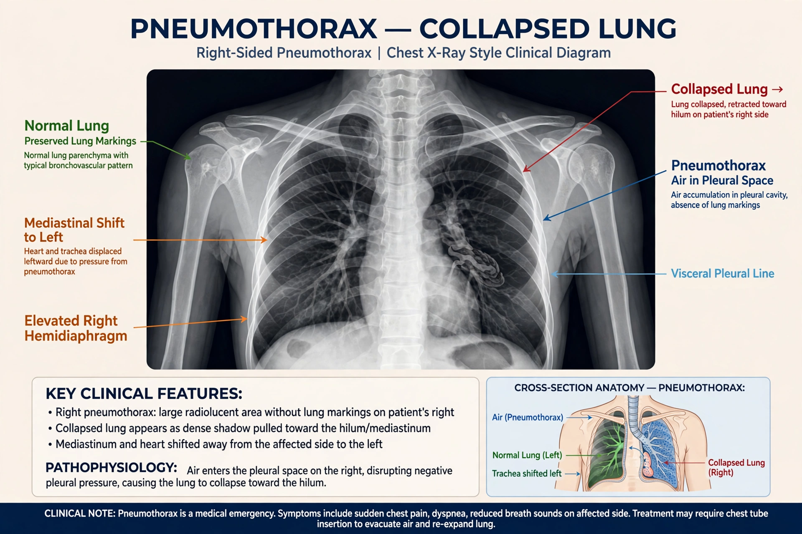

A pneumothorax is an abnormal collection of air in the pleural space between the lung and the chest wall. Symptoms typically include sudden onset of sharp, one-sided chest pain and shortness of breath. In a minority of cases a one-way valve is formed by an area of damaged tissue, and the amount of air in the space between chest wall and lungs increases; this is called a tension pneumothorax, which can cause a steady decrease in blood oxygen and blood pressure and can be fatal unless treated.

A large right-sided pneumothorax on chest imaging.
| Pneumothorax | |
| Specialty | Pulmonology, thoracic surgery, emergency medicine |
|---|---|
| Symptoms | Sudden sharp chest pain, shortness of breath |
| Causes | Spontaneous (bleb rupture), trauma, lung disease, medical procedures |
| Risk factors | Smoking, tall thin build, COPD, cystic fibrosis |
| Diagnosis | Chest X-ray, CT scan, ultrasound |
| Treatment | Observation, needle aspiration, chest tube, surgery |
Primary spontaneous pneumothorax occurs without underlying lung disease, typically in tall, thin young men, and is attributed to rupture of small subpleural blebs. Secondary spontaneous pneumothorax occurs in people with significant lung disease such as chronic obstructive pulmonary disease. Other causes include chest trauma, complications of medical procedures, and, rarely, menstruation-related (catamenial) pneumothorax associated with endometriosis.
On examination there may be reduced breath sounds and hyperresonance to percussion on the affected side. A tension pneumothorax can produce tracheal deviation, distended neck veins and haemodynamic collapse, and is a medical emergency treated by immediate needle decompression followed by a chest drain.
Small pneumothoraces in stable patients may resolve with observation alone, as air is gradually reabsorbed. Larger or symptomatic cases are treated with needle aspiration or intercostal chest tube drainage. Recurrent pneumothorax may require surgery (pleurodesis or pleurectomy) to prevent recurrence. Smoking cessation substantially reduces recurrence risk.
The condition was described by Jean Marc Gaspard Itard, a student of Rene Laennec, in 1803; Laennec himself described it in detail in 1819. Before effective tuberculosis treatments, pneumothorax was sometimes induced deliberately ("artificial pneumothorax") to rest a tuberculous lung.